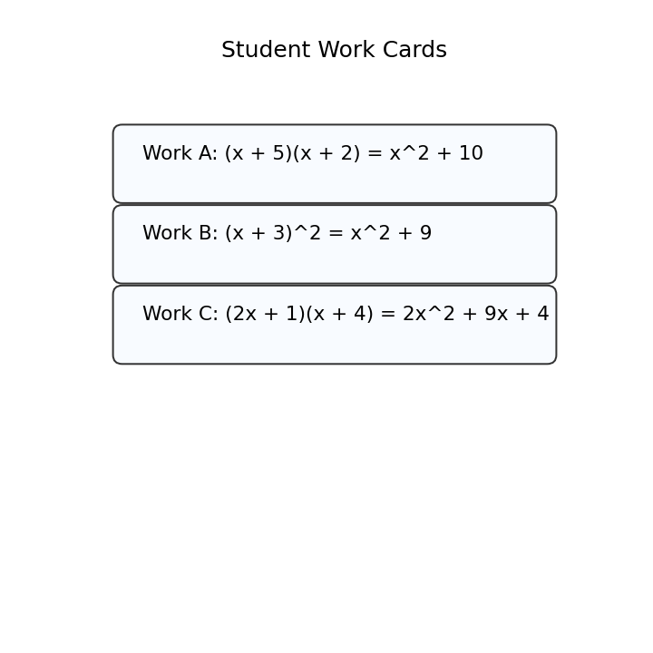

Classify $$2x^2-7x+5$$ by number of terms.
Identify the degree of $$9x^4+x^2-3$$.
Combine like terms: $$6x^2-2x^2+5x-x$$
Add and simplify.
$$(x^2+4x+1)+(3x^2-2x+8)$$
Subtract and simplify.
$$(5x^2+x-6)-(2x^2-3x+4)$$
Multiply and simplify.
$$(x+4)(x+1)$$
Choose one student work card. Identify the misconception and correct the work.

Create two polynomial expressions that simplify to the same result. Explain how you know they are equivalent.